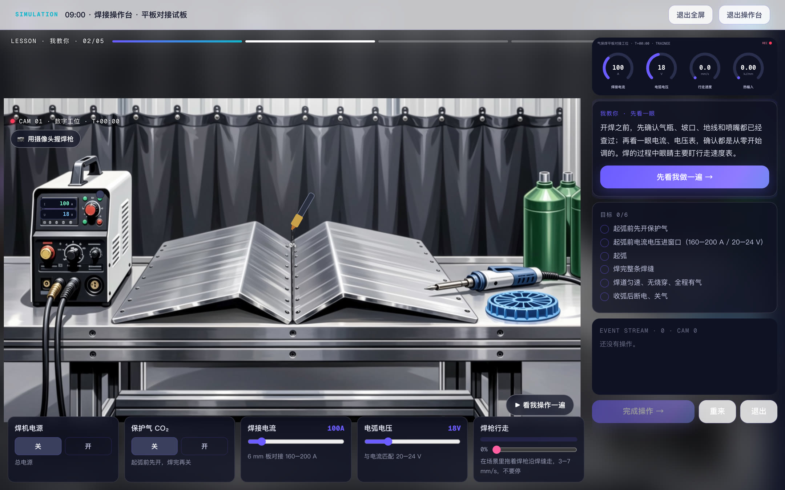
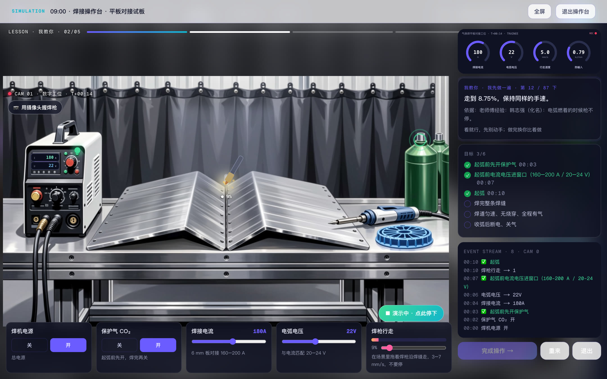
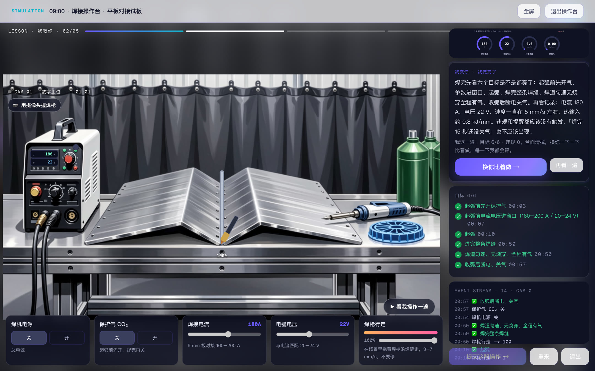

没把握就先选「我教你」：每一步它先讲要看什么、为什么，遇到操作台它先完整做一遍给你看，再换你比着做。这里不算分，放心试。
和「考考你」是同一天、同样的段落，只是每一步多了讲解和示范。
右边是它的讲解和这一段的目标；下面是操作区：开关、旋钮、拖着焊枪沿焊缝走。电脑有摄像头的话，也可以用手握「焊枪」。

它边做边讲：每一下是为什么，依据是哪位老师傅的经验。仪表、目标、事件记录跟着实时变化。

目标全亮了，它会总结这一遍的关键参数。点「换你比着做」，它一下一下带你做。
